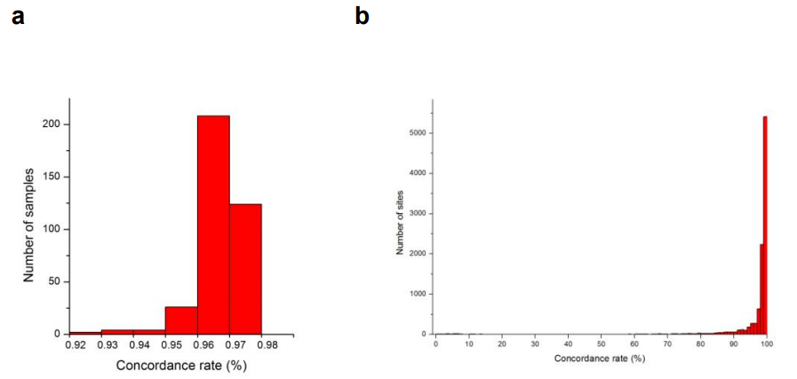

1. 文章概述
本篇要解读的文献是一篇发表较早，却比较经典的文章。是2013发表于 Nature Communication 上的一篇 eQTL的文章。
玉米基因组非常复杂，其重复性序列高达85%。作者通过对368份玉米多样性材料授粉后15天的籽粒进行RNA测序分析，获得了28769个基因的表达量，这些基因数约占玉米注释基因的60%，同时还获得了360万来自基因内的SNP标记。该项研究把基因表达量作为表型，通过全基因组关联分析，鉴定了 16408 个 eQTL。然后，通过发展的两步分析方法，把 95.1% 的 eQTL 限定到 10Kb 的区域，其中 67.7% 的 eQTL 只包含一个候选基因。
该研究认为，这不但说明基因的表达量可当作表型进行遗传分析，也充分体现了在玉米中进行关联分析的精度非常高，大部分都可以直接定位到基因。相对于其它农艺形状，基因表达的遗传结构相对简单，大部分只受1个或者2个位点控制。因此，该数据的集成，为进一步的玉米籽粒发育、基因克隆、表达调控网络重建等提供了极好资源。作者利用玉米籽粒类胡萝卜素为例证，通过联合分析，不但验证了此前基因克隆的结果，同时找到了55个其它可能与类胡萝卜素合成有关的基因，并重建了其可能的代谢调控网络。这为籽粒有关基因的挖掘和网络重建提供了新思路。
Abstract
RNA sequencing can simultaneously identify exonic polymorphisms and quantitate gene expression. Here we report RNA sequencing of developing maize kernels from 368 inbred lines producing 25.8 billion reads and 3.6 million single-nucleotide polymorphisms. Both the MaizeSNP50 BeadChip and the Sequenom MassArray iPLEX platforms confirm a subset of high-quality SNPs. Of these SNPs, we have mapped 931,484 to gene regions with a mean density of 40.3 SNPs per gene. The genome-wide association study identifies 16,408 expression quantitative trait loci. A two-step approach defines 95.1% of the eQTLs to a 10-kb region, and 67.7% of them include a single gene. The establishment of relationships between eQTLs and their targets reveals a large-scale gene regulatory network, which include the regulation of 31 zein and 16 key kernel genes. These results contribute to our understanding of kernel development and to the improvement of maize yield and nutritional quality.
2. 材料、方法和结论
2.1 实验材料
作者首先收集了 508 份包含热带、亚热带以及温带种质资源的玉米自交系。通过前期群体结构分析发现这些材料可以分为两个大的亚群（温带亚群和热带/亚热带亚群）。研究人员2010年把这些材料采用了单行不完全随机区组实验设计的方法种植在了湖北荆州。每个区块授粉6-8穗，在授粉15天后收集每个区块中3-4穗的五粒未成熟种子。随后作者将收自两个重复的种子混合提取了总 RNA，最终获得了 368 份材料的RNA。
同时收集了种植于中国农大农场的 SK 自交系授粉后 15 天的未成熟种子，作为对照材料用于后续分析。SK 自交系的RNASeq采取了两次技术重复。
完全随机区组实验设计：
不完全随机区组实验设计：
2.2 RNAseq 测序及结果统计
作者使用插入片段大小为 200 bp 的 PE90 测序文库进行了 RNAseq 测序。过滤掉低质量的测序数据之后，368 份玉米自交系总共获得了 25.8 billion 的 Reads，每个样本平均得到了 70.1 million 的 Reads。其中 71%的 Reads 比对到了玉米 B73 v2 参考基因组上，70.3% 的Reads 可以比对到参考基因上。在比对到 Gene 上的Reads 中，有 71.6% 的Reads 覆盖超过了 Gene 长度的 50%。（Fig1a.）在比对到基因组上的Reads 中 有 83% 的 reads 为 unique mapped 用来构建一致性序列。
2.2 SNP 检测与结果统计
过滤掉低质量数据及包含测序接头的序列后，作者使用 SOAP2 比对软件将序列比对到了玉米v2参考基因组上。然后作者保留了与基因组有唯一比对的序列进行进一步的变异检测。使用 Samtools 软件及 MAQ 软件生成了一致性序列。随后作者使用两步法鉴定了 RNASeq 得到的 SNP。
第一步，作者首先得到了群体的多态性位点。具体操作如下：使用 realSFS 软件（采用贝叶斯算法）计算了368份自交系比对上的序列的变异概率。变异可能性概率小于 99% 或者覆盖深度 < 50x 的位点首先被过滤掉。
为进一步减少由于 比对引起的假阳性位点，作者建立了如下的比对误差集：使用 MAQ 模拟了来自全转录组的数据，使用（-r 0）参数，使的模拟的数据不含变异。共 680M的 Reads 大约覆盖基因组 30x。然后将模拟得到的 Reads 使用相同的参数比对到参考基因组上，使用与之前相同的策略检测SNP位点。由于作者使用不含变异位点的模拟数据，所以这一步得到的SNP可以用必读中产生的假阳性来解释，然后这些位点被当作MES（错误集）去筛除真实数据中的SNP位点。
第二步，作者使用 Pileup 软件提取了每个自交系每个SNP的共有碱基、参考碱基、共有碱基质量、SNP质量分数以及测序深度。然后将满足以下条件的共有碱基视为其个体基因型：
如果共有碱基与参考碱基不同，则非参考等位基因需与群体中检测到的一致，且 SNP 质量分数大于 20 （99%）。如果共有碱基与参考碱基一致，共有碱基的质量分数 >= 20 最小覆盖深度 >= 5x.
不满足这些条件的位点作者将其标记为缺失。由此，作者得到了群体的基因型。
经过这两个步骤，作者共获得了 3,619,762 个SNPs。（Table 1）
其中， 2,636,164 SNPs 落在了外显子上，其数目是之前 6 个骨干自交系（468,900 exonic SNPs）的 5.6 倍。是已报道 NAM 群体（352,000 exonic SNPs）的 7.5 倍。是 B73 和 Mo17之间差异（73,900 exonic SNPs）的 35.7 倍。同时，NAM 群体中 69.7% 的 SNP 和 B73/Mo17 差异 SNP 的 87.5% 都在该研究的 SNPs 中。（Fig1b）。
总而言之，作者共获得了 1.6 million 的新 SNPs。与 B73 参考基因组相比，这些自交系的平均变异数目为 235,651。变化范围从 101,020 到 313,630 。
2.3 缺失基因型插补
作者使用 fastPHASE 软件（基于单倍型聚类算法开发的软件）对缺失的基因型进行了插补。作者将杂合的位点标记为了缺失。同时为了确定插补精度是否受到基因型缺失程度的影响，他们随机选择了1% 的 SNP位点（缺失率为 10% - 90% ）进行掩盖。然后通过随机掩盖一些材料的已知基因型位点计算其插补精确度。插补精确度由正确插补的为位点与总掩蔽的位点的比例表示。
结果表明，当缺失数据缺失程度为 0.6 时，插补精度为99.3％。（Fig2）所以，作者使用 缺失率为 0.6 时的 SNPS 标记，共 1,026,244 个，进行了插补。最后，根据SNP所在基因组的物理位置进行了 SNP 命名。
2.4 假阳性控制
为了控制假阳性，作者使用了包含两个重复的三个自交系（SK, Han21 和 Ye478），使用相同的方法及参数进行了 SNP Calling 和缺失基因型插补，并计算了插补前后的基因型一致性。发现一致性均超过了 99%。为了计算插补前的基因型一致性，作者仅考虑了不含缺失基因型的位点。一致性比率为一致位点数与可比较的总数的比例。（Table 2.）。
另外，该研究的基因型还与 MaizeSNP50 BeadChip 测定的基因型进行了比较，结果发现在插补之前一致性为 98.6% 查补后为 96.7%。（Table 3 和 Fig 3）.

鉴于与 MaizeSNP50 BeadChip 芯片分型的 Overlap SNP 的最小等位基因频率（MAF）与非重叠 SNP 的差异显着，作者进一步比较了不同 MAF 的SNP 的一致性，发现所有 SNP 的一致性均高于96％。（黑色为 overlap 的10117 个SNP，红色为其他非 Overlap 的SNP）。
2.5 基因型一致性评估及SNP 验证
作者对相同自交系在该研究和 Illumina MaizeSNP50 BeadChip 中的基因型的一致性进行了评估。
Illumina MaizeSNP50 BeadChip 芯片检测基因型是当时标记密度最高的芯片，其基于玉米参考基因组设计，大部分的SNP是common 变异位点。位于基因编码区的 SNP 约占标记总数的 1/3 。而最新的芯片密度已经到达了 600 K。
一致性比率为一致的位点数与 overlaped SNP 位点总数。此外还计算了 纯合一致率，即纯和基因型位点数与总数的比值。
作者随机挑选了355 个SNP（MAF >5%）通过 Sequenom MassArray iPLEX 基因分型鉴定了其在 96 个自交系中的基因型。使用了与 Illumina MaizeSNP50 BeadChip 比较中一致的参数鉴定其一致性。
此外，作者通过 PCR 从基因组 DNA 扩增了10个基因，并使用ABI3730对这些PCR产物进行了测序。RNAseq 检测到的 201个SNP 与来自于基因组 PCR 检测得到变异位点一致性达到了 96.1%。
综上，说明本研究中通过 RNAseq 得到的 SNP 可靠性较高，可用于及后续分析。
由于样本量和这些样本之间的关系，368 个近交系的总体基因组多样性的 Watterson’s θ 为 0.0196。
2.6 SNP 注释
作者根据SNP在基因组及转录本中的位置进行了分类（基因间区、内含子、外显子等），对于落在外显子上的SNP进一步分为 CDS、5’ UTR 及 3’ UTR 区域。
同时，作者还根据SNP是否引起氨基酸的变异，将落在 CDS 区域中的 SNP 分类为同义突变和非同义突变。
导致提前终止或者破坏掉终止密码子的 SNP 被注释为大效应 SNP。
2.5 与之前研究的比较
作者还从 Panzea 下载了之前发表的 NAM 群体的数据，并与 落在外显子区域上的SNP进行了比较。与此同时也提取了 B73 和 Mo17 的 SNP 进行了比较。
2.6 LD 衰减计算
使用 Haploview 软件计算了250kb 内所有的 LD 。设定参数为：-n -maxdistance 250 -minMAF 0.005 -hwcutoff 0 -dprime。
以 50 bp为步长，计算100bp 滑动窗口内的平均 R^2，并确定平均配对到步移窗口中点的距离。然后使用 R 程序绘制R2 对标记距离的LD衰减曲线。
2.7 已知基因和转录本的定量
使用 RSEM 软件进行基因和转录本的表达定量，并使用 RPKM对定量结果归一化。
RSEM 使用EM算法（期望最大法）估算最大似然（ML）将多比对的序列分配给特定的基因或者转录本。
2.8 分位数变换
对于每一个样本，作者选取大于 >0 的基因表达量的中位数用于后续分析。通过线性模型检测 eQTL 的假设之一是每个基因型类型的表达值服从正态分布，但是异常值以及测序读数的错误估计导致并不满足正态分布，因此使用正常的分位数转化（使用R程序的 qqman函数）对每个基因的表达量进行归一化。虽然分位数转化并不能完全解决问题：它只能保证表型的整体正常，但是在每个基因型类型中不一定正常，然而考虑到遗传连锁分析中的微小效应，分位数变化对防止建模的强烈偏离来说不失为一种简单、明智的方法。同样的，作者对转录本也使用分位数进行了归一化。
2.9 群体结构与关联分析
作者使用了缺失率<20% ，MAF>5% 的16,338 SNPs 进行了 群体结构和亲缘关系的计算。群体结构的计算使用了基于 Bayesian Markov Chain Monte Carlo (MCMC) 的软件 STRUCTURE 软件进行计算：Burn-in 和 MCMC replications 都设置为了 10,000 。设置 k=3, 重复运行 5 次。使用 CLUMPP 软件整合 Structure运行的结果。使用相同的 SNP 基于 Loiselle 的方法计算亲缘关系，使用 TreeBeST 软件重建了 368 份自交系的 NJ Tree，估计节点的 bootstrap 为 100。使用 MEGA 软件对得到的进化树进行可视化。基于 Patterson 等人的方法，使用插补后的 SNPs 对自交系个体进行 PCA 分析。前两个主要成分用于可视化个体和调查组之间的遗传相关性。分位数变换后的表达量用来区分不同基因及转录本的表达水平。使用了TASSEL 软件，考虑群体结构和亲缘关系的线性混合模型对 MAF >5% 的SNP和表达量进行关联分析。使用通过完整模型和减少模型（无标记）的残差平方和（RSS）计算的部分 F-test 来测试每个 SNP 的关联显着性。作者使用 PEER 软件进一步估计了由贝叶斯因子分析引起表达变异的隐藏混杂因素。除人口结构外，与基因表达变异的 6 个因子和与转录本表达变异相关的8个隐藏因子被检测并加入到混合模型中，以检验关联显着性的有效性。分析中剔除了由 RNSeq 得到的杂合基因型。
2.10 多重检验矫正
使用 Bonferroni 方法，设置 α=0.05 （P<3.11 e−12 or 2.12 e−12）对假阳性结果进行控制。
2.11 eQTL 的鉴定
使用 TASSEL 软件 MLM 线性模型进行分析。
第一步，将使用 BH threshold 阈值矫正的 5 kb 之内的 SNP 聚为一个 cluster 。参考前人研究结果，具有er 内至少三个 显著的 SNP 的Cluster 才作为一个候选 eQTL，由其显著 SNP 代表。
第二步，LD（r2 > 0.1）中具有相同表达性状的其他更重要的候选eQTL的候选eQTL被认为是由LD结构引入的假阳性关联，然后被去除。如果两个候选 eQT L的显着性相同，则使用 R 统计计算环境中的 lm 函数，通过多元线性回归（MLR）估计每个 eQTL 中相关 SNP 的联合效应。在拟合模型之前，对每个标记进行重新编码，将具有参考基因型的自交系设置为 1 ，其他自交系设置为 0 。然后使用最小二乘估计拟合模型。基于Akaike信息准则（AIC）的标记的前后（逐步）选择从拟合空模型（无标记）开始。## 这句不理解
在之后每个步骤中，评估模型的全局重要性，以及新添加的标记的重要性。在向后的每个步骤中，逐渐剔除显著性最低的标记。使用 R2 计算最佳回归模型解释的总表型变异的比例。保留具有较大联合效应的 eQTL。
计算两个候选 eQTL （较不显著的 eQTL 和其他 eQTL 中更显著的 eSNPs 中的 Lead SNP）的 LD 程度。 如果在靶基因的转录起始位点或转录终点位点的 20kb 内发现了导联SNP，则认为 eQTL 是局部的;否则，eQTL被认为是遥远的。
结合种群结构和随机遗传背景，通过求解线性混合模型估计每个 eQTL 的影响。虽然非遗传因素可能对确定基因表达很重要，但这种方法的简单性仍可用于揭示基因表达的遗传模型。
玉米B73的表达图谱提供了正交信息（非遗传变异）以通过自然遗传变异支持基因调控。
2.12 网络分析
使用 Gene 及其调控因子构建遗传网络。位于 eQTL 物理位置区域内并含有该 eQTL 的 lead SNP 的一个基因被指定为该基因的调节因子。在成对调节关系的基础上，通过从调节子到靶基因产生有向边缘来连接节点（基因）。使用玉米 ProFITS 数据库注释 TFs 。
2.13 GO 富集分析
使用网页工具 agriGO 进行 GO 分析，
2.14 类胡萝卜素定量
作者2009年在雅安进行了一次复制，采用完全随机区组设计，每行中超过6株植物自花授粉，并且使用 HPLC将来自每个品系的膨化的 50 粒籽粒用于类胡萝卜素定量。
类胡萝卜素，包括α-胡萝卜素，叶黄素，β-胡萝卜素，β-隐黄质和玉米黄质，通过对外标准的标准回归来量化。
衍生的维生素原A（Va）的浓度通过α-胡萝卜素，β-胡萝卜素和β-隐黄质的总和来计算：维生素A =β-胡萝卜素+（α-胡萝卜素+β-隐黄质）/ 2。
3. 讨论
- 针对使用 RNAseq 检测变异的一些限制因素的优化，首先使用了玉米自交系而不是杂交种来避免由等位基因特异表引起的偏好。可变剪切会导致Reads 在比对到剪切位点时产生错误。因此作者在比对到连续外显子上考虑至少有两条或者更多的测序质量分数大于 20 的 Reads。
- 获得了大量的变异位点，对玉米研究有重要的意义
- 通过RNAseq 与MaizeSNP50 BeadChip 以及 Sequenom MassArray iPLEX 检测验证的位点存在高度一致性，而一致性低的部分可能由以下原因组成： a.) 大量重复序列以及多拷贝导致的 SNP 假阳性的发生。 b.) 一些存在的拷贝数变异
参考信息
文章连接：https://www.nature.com/articles/ncomms3832#methods
不完全随机区组设计：https://onlinelibrary.wiley.com/doi/pdf/10.1111/j.1469-1809.1936.tb02134.x